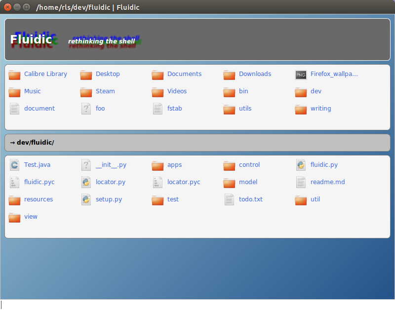

Fluidic is an ambitious project to build a next-generation shell which is integrated with the GUI and has a new syntax.
This is an outline of what I think are some of the limitations of current shells, followed by an exploration of how Fluidic may be able to overcome some of those limitations.
The traditional shell is fast and extremely powerful in the hands of the experienced user. However, this comes at a cost; the learning curve is very steep, discoverability is very low, and learning the shell's commands places a high cognitive load on the user.
(By "traditional shell" I am talking here primarily about UNIX shells such as bash, zsh, and so on, and I am going to assume you have some familiarity with said shells. However, these points should also be mostly applicable to other shells such as the Windows console and PowerShell).
Traditional shells fail to make effective use of the GUI. They are faster and more powerful than a graphical file handler but they are also very much inferior for some simple tasks such as recognising an image file. Ideally we would like the best of both worlds but instead we are forced to choose one paradigm or the other.
Simply using the shell at all demands learning quite a few concepts (such as current working directory and piping), and a large number of commands abbreviated in arbitrary fashion (e.g. ls for list, cd for change directory, pwd for print working directory).
Using the shell for more complicated tasks is even harder. To do any moderately complex task it is necessary to be aware of the subtleties of the various command line tools available. Unfortunately these are legion.
Unfortunately the command line tools available do not accept switches in a standardised way. Consider a command, bar, that we wish to invoke on the program foo. The means of invoking bar with foo could be:
foo -bfoo -barfoo --barfoo -bar=1foo -bar=true...and so on! The only way to know how to invoke the command is to have used it before, or to look it up (though if you know something about the program you may have a clue as to how it is called — e.g. if it is part of the GNU suite of tools).
Another problem is that doing the same sort of thing requires different commands. For example, consider recursion. Shell builtins and other command-line programs often have an option for enabling recursive application of the command to a hierarchy of files. For example, ls uses -r and chmod uses -R.
A class of this type of problem that is particularly prevalent is the lack of standardisation of specifying input and output. Some utilities expect input from standard input, whereas others expect a filename passed as the final argument. Still others require a switch or option to set the input (e.g. tar -xf filename).
Output is similarly arbitrary, with again programs expecting to send output to standard output (cat filename), or a specified file (gcc -o filename)
The are various reasons for why these problems exist. Some are historical anomalies, or a lack of standardisation. Others are compromises.
Another problem with shells (as I see it) is a lack of modularity.
Consider the following problems:
.java below the directory of ~/code/ that were created todayImagine if we had a next-generation shell that was regular, consistent, modular, designed for usability from the ground up, and well-integrated with the GUI. Maybe it is too much to get there in one step but Fluidic is an experiment to see what it might look like.
You may wish to read this section whilst playing with Fluidic.
The most immediately noticeable thing about Fluidic is probably the fact that it is graphical. If you enter ls, you will get a list of filenames from your working directory back with icons.
Cool (hopefully) but also useful in that you get the visual feedback of a GUI (e.g. thumbnails of images) without sacrificing the speed and power of the command line (or so goes the theory at least).
To view an individual file (such as an image file or a text file), simply type the name of the file. That's it.
Instead of a cd command, fluidic uses go (at least as easy to type and just as short; cd is also provided as an alias though). However, you will rarely need to type this; in Fluidic it is only necessary to type the name of a directory to navigate to it.
To see the properties of a file (or directory), type its name followed by properties (e.g. foo.jpeg properties). It may feel odd (unless you familiar with languages such as Lisp) typing the noun then the verb; however there are benefits. The main one is regularity. In each fluidic command there is pipeline reading from left to right.
Unlike traditional shells there is no need to type the pipe (|) operator to chain commands together. Commands that are listed in order are automatically turned into a pipeline.
To demonstrate an example of this, consider the ls command we looked at above. You may want to see a different view of your files; for example, you can type ls table to get a tabular view of your files. Here we are piping the output of ls to the table renderer. (It is easy using Fluidic to convert between output formats and should be easy to add new ones as required.)
If you find those icons get in the way, it easy to revert to console behaviour. Try typing ls text. That list of filenames will be returned in purely textual form. This piping should work for all commands that produce an output.
Let's talk more about Fluidic's pipeline. (If you're not interested in the internals of Fluidic, feel free to skip to the next section). In concept this is very similar to the traditional shell idea of the construction of commands through pipes.
A conceptual difference between bash and Fluidic is that bash commands expect an input and produce an output; Fluidic expects a pipeline that handles its own input and output. If a command is supplied that is not a complete pipeline, Fluidic attempts to build one out of the command.
Fluidic has a rudimentary type system whereby each command declares what kind of input it expects and what kind of output it supplies. This typing allows Fluidic to build a pipeline.
Fluidic checks the first command to see what input it is expecting. If it doesn't expect an input, Fluidic doesn't do anything. If it expects a file, Fluidic adds a command (behind the scenes) to supply the current directory. If text is expected, Fluidic reverts to standard input. If a user is expected, Fluidic assumes the current user.
Fluidic also checks the last command to see what output it produces. If it doesn't output anything then Fluidic considers the pipeline complete, but if it does then Fluidic ensures that the output is handled. Commands may nominate a default command to handle their output (for example the history command requests its output to be an ordered list); in this case, Fluidic adds this command to the end of the pipeline. If not, Fluidic adds a renderer to the end of the pipeline to handle the output: for example, if a list of files are returned at the end of the pipeline, Fluidic by default termminates the pipeline with a list files renderer.
If you would like to know what the actual pipeline Fluidic is building behind the scenes, the command pipeline returns a visual representation, as in the following example: pipeline(ls reverse text).
Regarding options, Fluidic's philosophy is that these should be reduced where possible. One way of doing this is to separate these options into different commands.
Recall above where we looked at the different recursion options in different commands. Fluidic uses a separate command for recursion, recur. Try typing recur ls to see all files below the current directory.
recur can be used anywhere a command expects a file type as input so there should be no need to check man pages for the correct syntax, nor complain about a command for not providing a facility for recursion.
Some commands do need options, and these are specified in brackets after the command. An example is the sort command which may be used like this: sort(size) or sort(created).
To get files sorted in reverse order, there is no option to remember for each command, but a different command: sort(created) reverse.
If you pass a file to a file in the pipeline, such as in this example: data-file-0 data-file-1 wc, then the two files are added together as a collection and passed to the following command.
In concept there is little difference between supplying one file or several files to a command. Fluidic wraps up individual files as a list of one to provide a normalised input. All commands are expected to handle lists as inputs.
The usual commands are available for reading and writing to files, including write, append, copy and read.
Some commands which I expect to be used frequently have symbol aliases:
| keep | + |
| drop | - |
| sort | ^ |
| write | > |
| append | >> |
| read | < |
| copy | -> |
| recurse | ! |
Some examples of putting it all together:
data/ +(size>20M) ^(modified) text >(large-sorted)data/ ! -(created=today) <